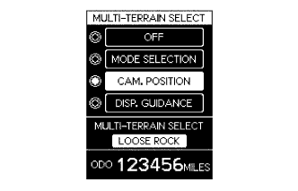

SIDE MONITOR SYSTEM (w/ Rear View Monitor System) > SYSTEM DESCRIPTION |
| GENERAL |
This system has a side television camera assembly built into the front passenger side outer rear view mirror assembly and driver side outer rear view mirror assembly* to display the passenger side view and driver side view* of the vehicle on the accessory meter assembly.
This system consists of the following components: steering pad switch assembly (Wide view front and side monitor switch) and combination meter assembly.
Front passenger side television camera assembly
Driver side television camera assembly*
Parking assist ECU
Accessory meter assembly
Steering pad switch assembly (Wide view front and side monitor switch)
Spiral with sensor cable sub-assembly
Driving support switch control ECU
Skid control ECU
ECM
This system is equipped with a self-diagnosis system, which is operated on a designated window that appears on the display panel, just as in the navigation system.
| FUNCTION OF COMPONENTS |
The parking assist ECU controls the system by using information from the following components.
| Item | Function |
|
|
| Parking Assist ECU |
|
| Accessory Meter Assembly | Receives the video signals containing a composite of the front passenger side view and driver side view* of the vehicle from the parking assist ECU and displays them on the display panel. |
| ECM |
|
| Outer Mirror Switch Assembly |
|
| Spiral with Sensor Cable Sub-assembly | Transmits a steering angle sensor signal to the parking assist ECU. |
| Steering Pad Switch Assembly | Transmits the wide view front and side monitor switch signal to the parking assist ECU through CAN communication. |
| Skid Control ECU | Transmits a vehicle speed signal to the parking assist ECU through CAN communication. |
| OPERATION EXPLANATION |
The wide view front and side monitor switch on signal is sent from the steering pad switch assembly to the parking assist ECU.
After receiving the wide view front and side monitor switch on signal, the parking assist ECU switches the display signal for the accessory meter assembly from the meter and gauge system to the side monitor system.
| DISPLAY CONDITIONS FOR SIDE MONITOR DISPLAY |
Screen display operation
| *a | Side Monitor Display |
After the display conditions are met while the side monitor system is operating normally (when no DTCs are stored), the side monitor display will be displayed.
Display conditions for manual display mode, when shift lever is in R
The side monitor system changes the displayed image when the wide view front and side monitor switch is operated while the following conditions are met and either the engine switch is on (IG) or the engine is running (no DTCs stored).
| Automatic Mode Display Button | Accessory Meter Screen | Shift Lever Position | Vehicle Speed | Screen (Changes Due to Wide View Front and Side Monitor Switch Operation) |
| OFF | Parking assist monitor display | R | 12 km/h (7.5 mph) or less | Side monitor display → Rear monitor display |
 | Wide view front and side monitor switch pressed | - | - |
Display conditions for manual display mode, when shift lever is not in R
The side monitor system changes the displayed image when the wide view front and side monitor switch is operated while the following conditions are met and either the engine switch is on (IG) or the engine is running (no DTCs stored).
| Automatic Mode Display Button | Accessory Meter Screen | Shift Lever Position | Vehicle Speed | Screen (Changes Due to Wide View Front and Side Monitor Switch Operation) |
| OFF | Parking assist monitor display | Not in R | 12 km/h (7.5 mph) or less | Side monitor display → Accessory meter display → Wide view front monitor display |

 | Wide view front and side monitor switch pressed |  | When the vehicle speed is more than 12 km/h (7.5 mph) |
| DISPLAY CONDITIONS FOR MULTI-TERRAIN MONITOR |
Turn the engine switch on (IG).
Turn multi-terrain select mode on.
|  |
Select "CAM. POSITION".
The following are the display conditions for camera selection in multi-terrain select mode when the shift lever is not in R.
| Engine Switch | Multi-terrain Select | Shift Lever Position | Vehicle Speed |
| on (IG) | ON | Not in R | Less than 10 km/h (6.2 mph) |

| *a | Multi-information Display Outline | *b | Accessory Meter Outline |
| Multi-information display changes when multi-function switch is pushed up/down | | Accessory meter changes when multi-function switch is pushed up/down |
The following are the display conditions for camera selection in multi-terrain select mode when the shift lever is in R.
| Engine Switch | Multi-terrain Select | Shift Lever Position | Vehicle Speed |
| on (IG) | ON | R | Less than 10 km/h (6.2 mph) |
| *a | Multi-information Display Outline | *b | Accessory Meter Outline |
| Multi-information display changes when multi-function switch is pushed up/down | | Accessory meter changes when multi-function switch is pushed up/down |